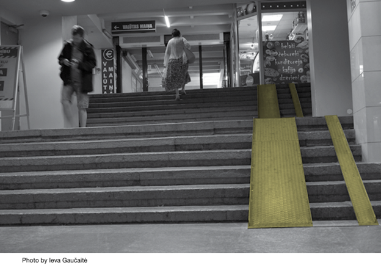 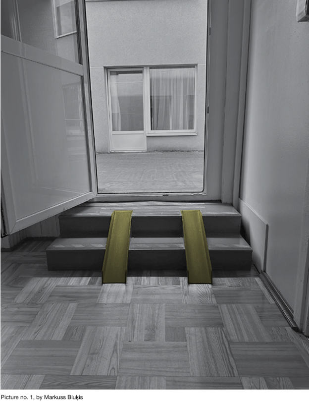 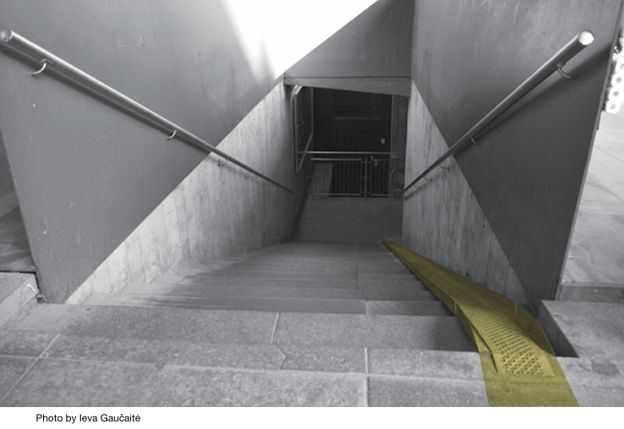
ABOUT THE PROJECT
The project “Without Restrictions” is run by the Latvian NGO Fonds Tavs Atbalsts and the Lithuanian Organization for Applied Anthropology Anthropos, since January 2024 and is planned to be finalized in July 2025. The Erasmus+ Small Scale Partnership scheme funds it. The aims of the project are twofold:
(1) Provide deeper knowledge and strengthen the skills of partner organizations in running international pro jects focused on young people with mobility disabilities.
(2) Empowering youth with mobility disabilities from both countries by involving them in developing and carrying out a research project in which their task is to document and convey the experiences of young people living with mobility disabilities.
This document is a report on the research component of the project. It provides the social and legislative context in which the project is developed; a description of the method used to collect data; the approach to analyzing the data; the analysis of the data; as well as a conclusion and a list of recommendations. The framework and methodology used in the research was introduced by the anthropologists involved in the project.
However, involving the participants and fostering their role as co-researchers was one of the project’s goals—i.e. the co-researches have actively participated not only in providing data but also in the stages of its coding and analysis; the final stage of the project will involve sharing the research results in the form of a photography exhibition. Such intensive involvement was possible due to continuous discussion facilitated by the researchers in Lithuania and Latvia during the research period. In the framework of this Table of Content project, two meetings (in Riga and Vilnius) took place, both aimed at introducing the co-researchers to the foundations of qualitative research: the method of Photovoice in anthropology, photographic composition and production, research ethics, qualitative data coding, and so forth. Although this report is written by the anthropologists involved in the project, the final version of the report has been read and commented upon by some of the co-researchers. This version of the research report has been adjusted for readability by one of the co-researchers of the project.
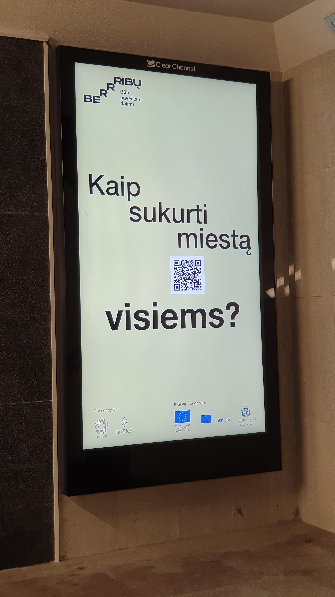 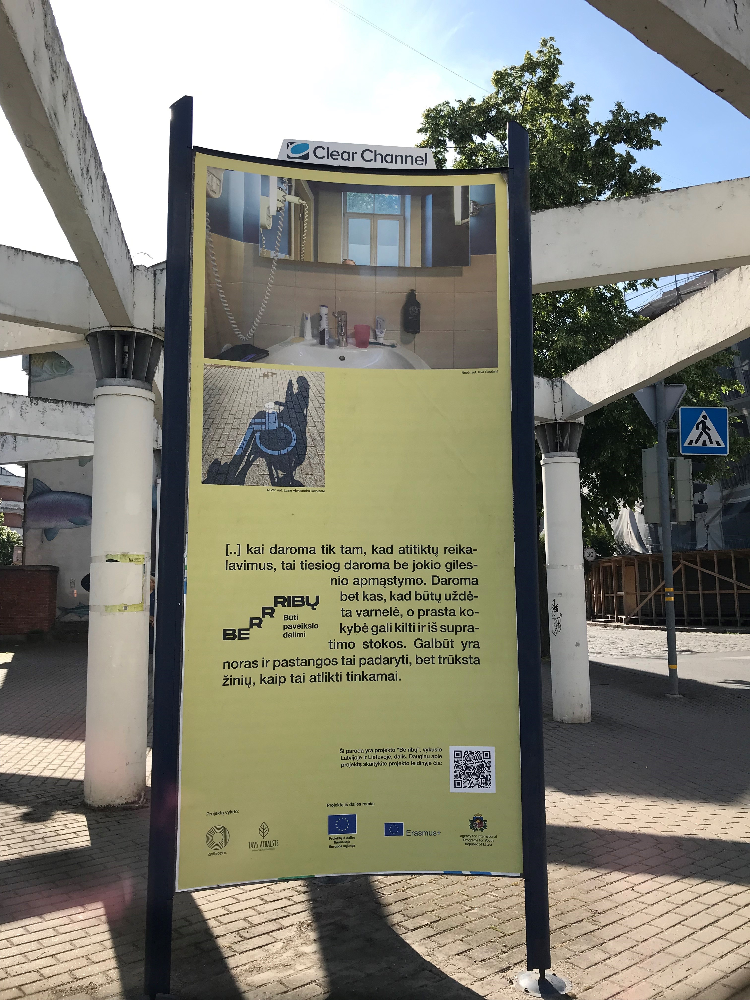 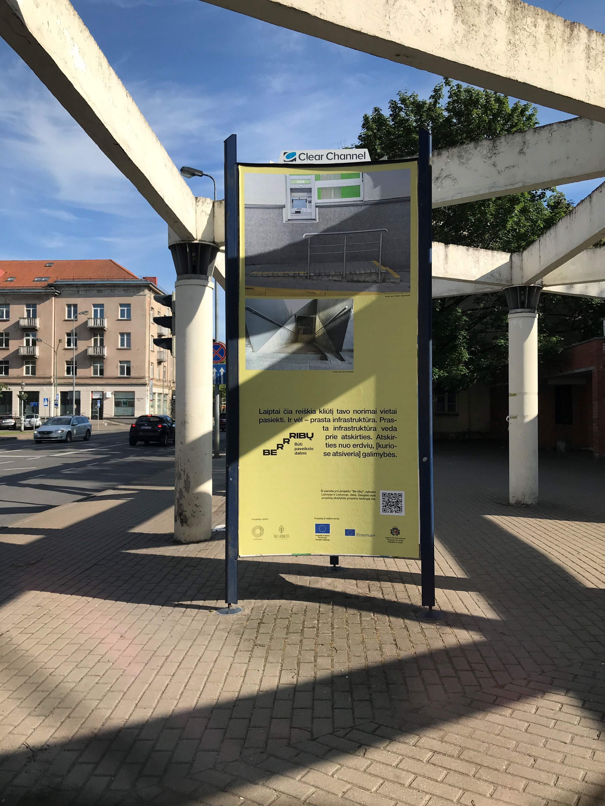 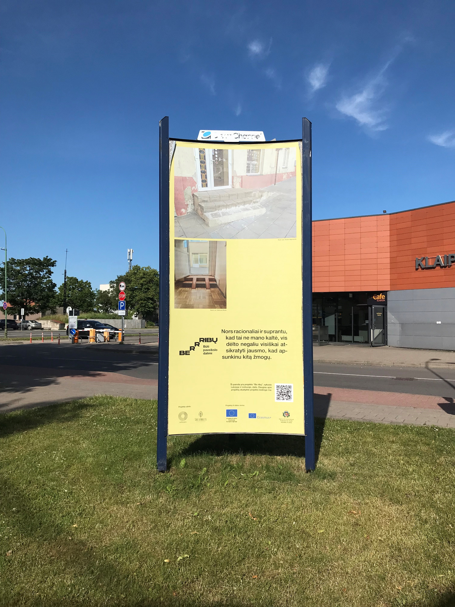
RECOMMENDATIONS
1. Provide more direct ways for young people with mobility disabilities to participate in the stages of planning, development and implementation of services and infrastructure through: steering committees, focus groups and other youth-friendly activities.
2. Improve accessibility of youth oriented activities and facilities on a local, municipal level through making sure that built infrastructure is maintained and repaired in a timely manner.
3. Facilitate the accessibility of public transport, including international travel, in order to improve the mobility of young people.
4. Improve information accessibility online by establishing clear guide lines of what kind of information must be provided on the homepages of facilities and services—including information about accessibility, for example, maps.
5. Principles of Universal Design should be applied in order to ensure the accessibility of buildings and other spaces as sites where young people may fulfill their social, cultural, economic, needs and desires.
6. Provide information about accessibility in the physical environment in a detailed manner, for example, a poster detailing where to enter the building if you have mobility challenges.
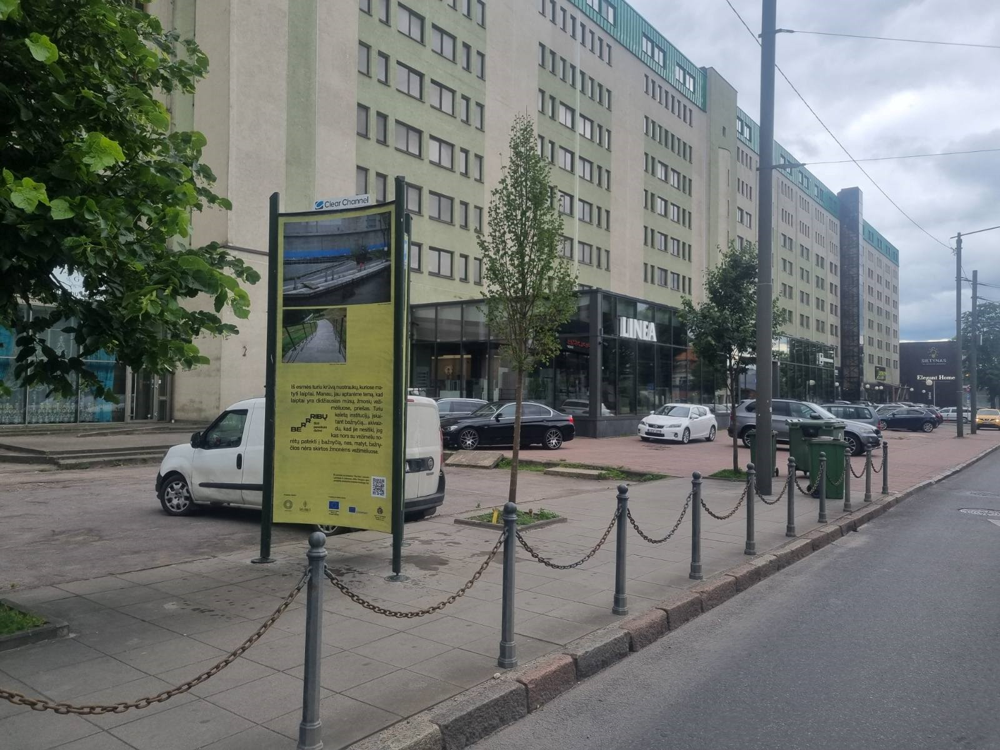 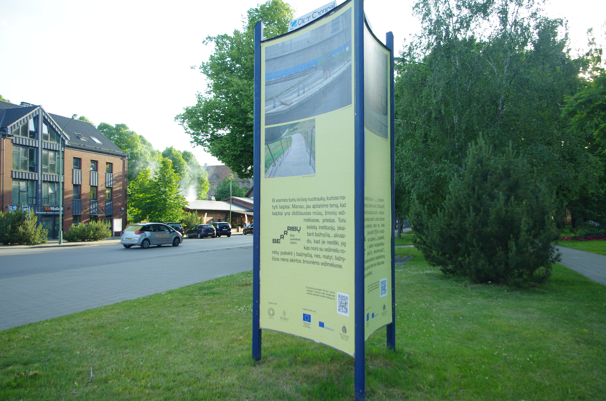 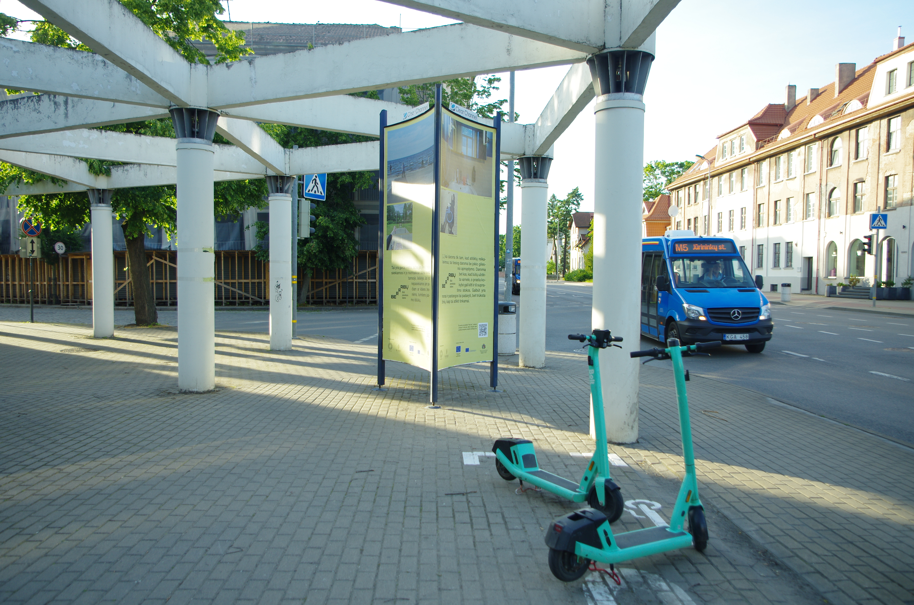
RESEARCH QUESTIONS
The main research question was discussed and defined collectively by both researchers and co-researchers. It has been formulated in the following way: What are the ways in which disability and discrimination is experienced by young people with mobility disabilities in contemporary Latvia and Lithuania? What are the differences between the two countries? What accessibility challenges are the most concerning? What are the best improvements and solutions?
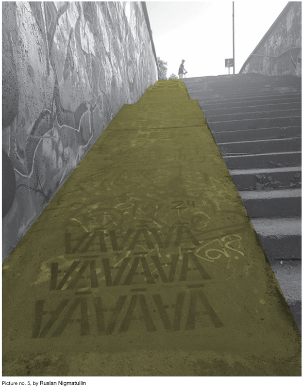 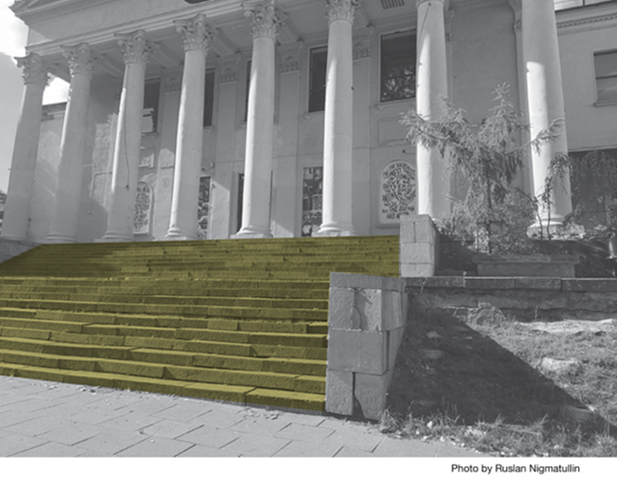 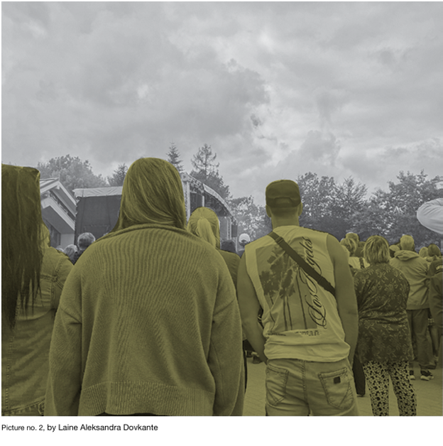
CONCLUSION
In this research, we set out to answer the following questions:
• What are the ways disability and discrimination is experienced by young people in contemporary Latvia and Lithuania?
• What are the differences between the two countries?
Picture no. 18 Table of Content Picture no. 19 The research data shows no significant difference between Latvia and Lithuania regarding experiences of disability and discrimination. However, informal discussions with co-researchers revealed an interesting point: while some Lithuanian co-researchers viewed Riga positively, the Latvian participants admired the infrastructure in Vilnius. What this shows is that while the objective difference in physical accessibility may be negligible, the opportunity to visit another country gave our co-researchers a different perspective on both the physical environment and their own abilities. It highlights the importance of international cooperation and travel for enhancing the confidence and self-assurance of project participants.
Most photos taken by co-researchers focused on everyday challenges, particularly the inaccessibility of certain places and services due to poor design. Infrastructural challenges might hinder access to essential ser vices, such as education, healthcare, financial services as well as leisure activities like going to concerts, visiting the beach, gardening, etc.
Another challenge is the lack of publicly available information—both online and on site—about the accessibility of buildings and surrounding 106 107 environments that young people need or want to visit. Without this information, young people with mobility disabilities may not even attempt to access services in person, as they face multiple obstacles that may be manageable individually but overwhelming together. When information is available, however, it allows them to plan their visits based on the resources they have. The issue of accessible local and international public transport also relates to these challenges, as discussed in the “Challenges” section of this report under “International and Local Transportation,” which outlines the difficulties faced by project participants.
Research data shows that the experiences of young people with mobility disabilities are far from uniform even if the challenges they face are similar. The discrimination experienced by our co-researchers was rarely overt or direct, but rather something our co-researchers saw as unavoidable; such as a lack of investment in accessible infrastructure.
Nevertheless, our co-researchers showed remarkable resilience in overcoming these challenges and demonstrated the ability to critically and realistically assess the research data. This project demonstrates how the involvement of young people with mobility disability can be achieved and the benefits it brings to the production of shared knowledge. Collaborative processes also contribute to the skills of the young people involved and improve their ability and desire to participate in the democratic process in the future.
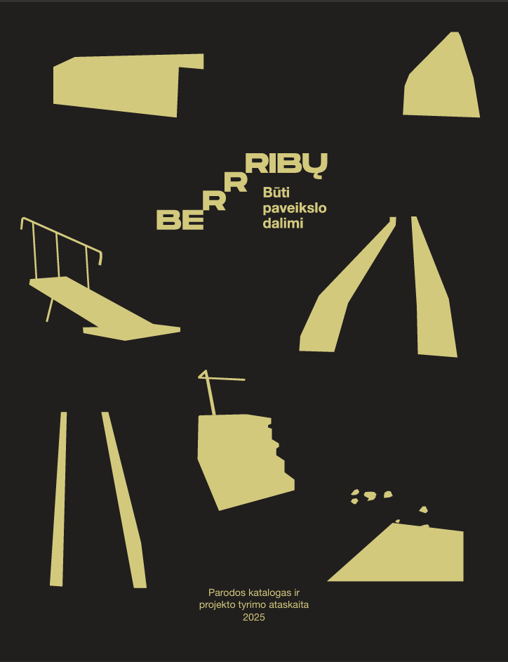 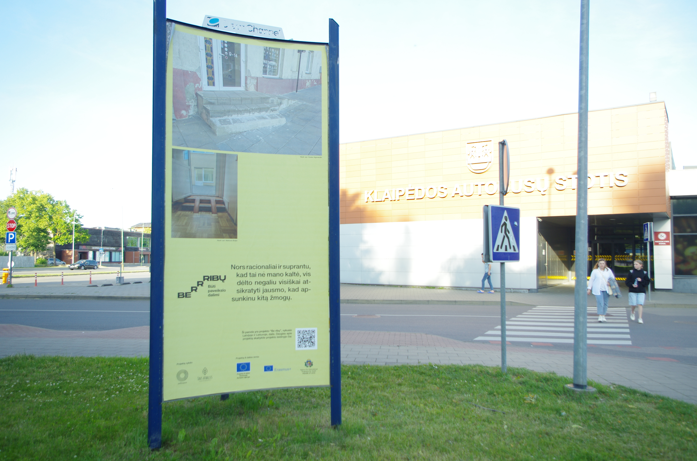 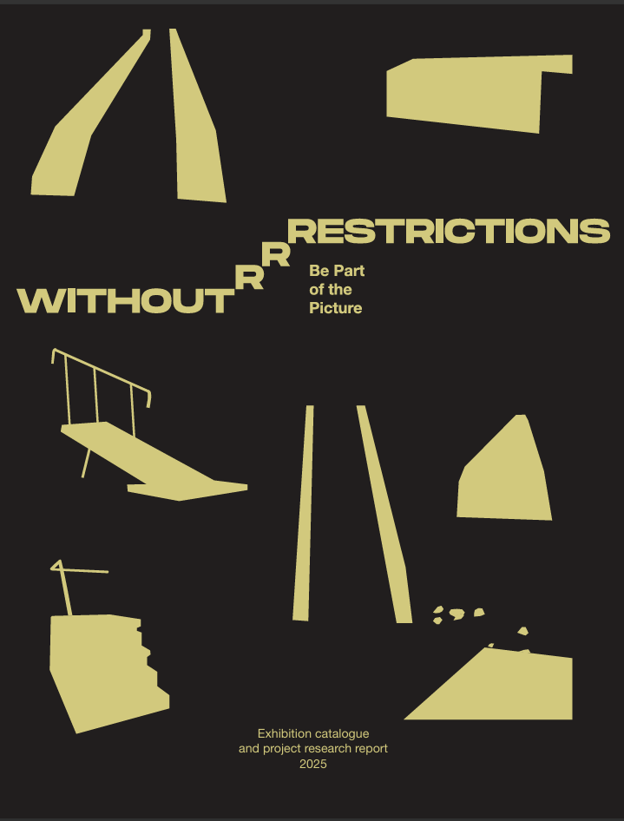
Čia galite susipažinti su projekto rezultatais (LT):
Atsisiųsti / Download („Be ribų. Būti paveikslo dalimi“, parodos katalogas ir projekto tyrimo ataskaita, 2025 )
Here you can check out the project results (EN):
Atsisiųsti / Download ("Without Restrictions. Be Part of the Picture", Exhibition catalogue and project research report, 2025 )
Text from the exhibition catalogue and the project research report “Without Restrictions. Be Part of the Picture”, 2025
ALL OUR PUBLICATIONS
APPLIED ANTHROPOLOGY ORGANIZATION "ANTHROPOS"
Company Code: 304743335
VAT Code: LT100018477116*
Registration address: Laisvės a. 110, LT-44253, Kaunas, Lithuania
Bank account No.: Luminor LT 20 4010 0510 0419 3055
Email: taikomoji.antropologija@gmail.com
Phone No.: +37065350308 (Ugnė Barbora Starkutė)
* VAT not applied. The small business scheme in Lithuania applies.
{kind=link}
{kind=link}
{kind=link}
{kind=link}
{kind=link}
{kind=link}
{kind=link}
{kind=link}
{kind=link}
{kind=link}
{kind=link}
{kind=link}
{kind=link}
{kind=link}
{kind=link}
{kind=link}